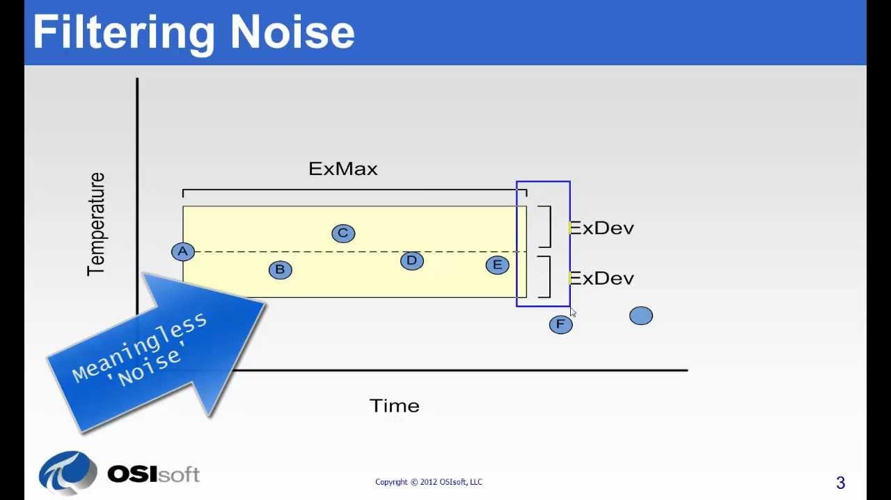
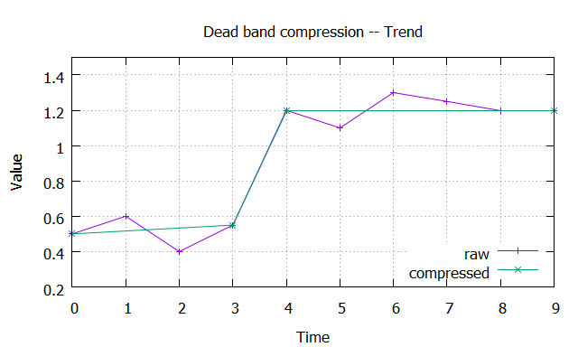

Dead band
Purpose
Filtering noise caused by measure- or device-errors (i.e. instrument precision).
Description
Values that lie inbetween the dead band, defined by ExDev, get ommited because they are not meaningful. Decisions should not be based on these value. They are just noise, therefore they can be filtered out.

When a value is outside of the dead band, that value and the previous value are recored in order to maintain the trend.

Parameters
| Name | Description |
|---|---|
| ExDev | (absolut) instrument precision |
| ExMax | length of x/time before for sure a value gets recoreded |
Examples
Trend

Max Delta

Error and Statistics

| Data | # datapoints | average | sigma | skewness | kurtosis |
|---|---|---|---|---|---|
| raw | 1000 | 19.6584 | 0.1960 | -0.0330 | 2.3442 |
| compressed | 490 | 19.6623 | 0.2007 | -0.1021 | 2.4672 |
As can be seen statistics didn't change significantally, but the count of recorded datapoints was reduced -- by filtering noise -- by 51%.